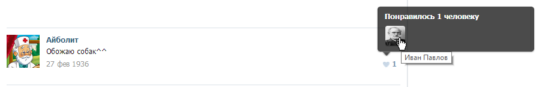

Скачать LikePack для Windows 8
LikePack одинаково хорошо работает на настольных компьютерах, ноутбуках и на планшетах с установленной Windows 8. Скачайте приложение прямо сейчас из официального магазина Windows Store и начните узнавать новое о ваших друзьях и не только!
Все тайные желания человека у вас на устройстве

Пользователи социальных сетей очень небрежны и думают, что про их действия никто не узнает. Но теперь это не так!
LikePack способен показать, что понравилось человеку или даже к чему (или к кому) он питает особую страсть.
Интересные возможности
На сегодняшний день - это самый удобный и быстрый способ получить информацию об увлечениях человека!
Сканирование активности в соц сети абсолютно любого человека
Первый в мире сервис - агрегатор лайков для Windows 8!
Программная система, способная собирать информацию по 100 записяи сразу у 4-х пользователей за 1 секунду!
Сохранение неограниченного числа исходов поиска
Что потом?

Оставайся с нами и тебе достанутся такие вкусности как:
Веб версия приложения. Больше никаких зависимостей от ОС!
Интеграция других соц. сетей (facebook, ..)
Сканирование по разным секциям сайта
Ещё более гибкая система настроек